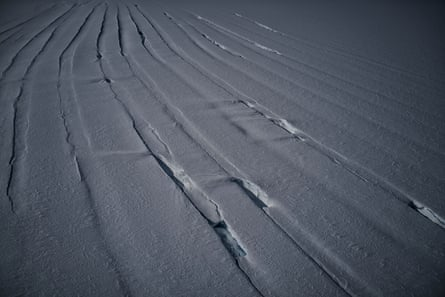

E very time Dr Ricardo Jaña crosses the turbulent seas that separate Chile from Antarctica, it feels like his first time. The glaciologist at the Chilean Antarctic Institute (Inach) has sailed each year for 12 years through the Drake Passage, where the prevailing westerly winds, unimpeded by any land mass, raise the waters in chaotic waves that lash his boat.
“I feel powerless and resigned to the forces of nature,” says Jaña, who is the research chief at the Union Glacier Joint Scientific Polar Station.
Union glacier, nearly a mile thick, sits at an elevation of more than 700 metres (2,300 feet), and were it not for the ice, it would be a fjord. The glacier’s immense force has pushed out the sea entirely, creating a unique environment for scientific study.
Jaña skis around the glacier making global navigation satellite system measurements
Recent research has revealed unprecedented glacier retreat worldwide, with five of the last six years representing the most rapid loss on record. The period from 2022 to 2024 recorded the largest three-year loss of glacier mass ever documented. This trend is consistent across the Arctic and Antarctic regions, where rising atmospheric and ocean temperatures drive the ice melt .
Unlike the wet maritime climate of the Antarctic peninsula, Union glacier is one of the driest deserts on the planet. The peaks of the Ellsworth mountains that hem in the glacier are often ice-free. Flying over the range in a Twin Otter aircraft, the top of the mountains to the far south side are visible, acting as a natural dam holding back the west Antarctic ice sheet.
Glaciers pour over the passes of the Ellsworth mountains
On Union glacier, the effects of the climate crisis on the Antarctic peninsula appear slightly more remote. Temperatures remain well below freezing, even in the austral summer. Still, scientists are vigilant for signs of warming creeping in from the coast to this pristine interior.
According to scientific bodies including the World Meteorological Organization, rising temperatures are causing the Antarctic ice sheet to melt at an accelerated rate. If global temperature rises exceed 2C, large portions – including the Union glacier – may reach tipping points, resulting in irreversible retreat .
Pack ice breaks up in the sea near Union Glacier
There are signs that some large Antarctic glaciers have entered a state of irreversible loss, contributing to global sea level rise and altering ocean circulation patterns.
Since 2014, the Chilean Antarctic Institute and the Chilean armed forces have maintained the Union Glacier Joint Scientific Polar Station from November to January. The station provides support for scientists from various nations to conduct their research.
Living on the glacier is an experience unlike any other. Tents serve as homes for weeks, and daytime temperature highs barely reach -10C (14F). The base is sheltered by high mountains and bathed in desert sun 24 hours a day, making the tents relatively warm and comfortable.

Clockwise from top: the Union Glacier Joint Scientific Polar Station; a transit point for arrivals; the mess hall; scientists use snowmobiles to conduct field experiments; and fog and snow descend on the camp
Jaña’s work involves measuring the glacier’s movement and thickness and the influence of tides using a global navigation satellite system (GNSS) receiver. The data he collects will help future generations of glaciologists accurately measure changes in the ice over time.
“Twelve years of study is a short time, but my personal feeling is that the weather over the past five years has become less stable,” Jaña says. While Union glacier remains relatively calm, flying from Punta Arenas in Chile has become more challenging due to increased storms on the peninsula.
Jaña measures the thickness and velocity of the nearby Schanz glacier with logistics staff
German Aguilera, a Chilean researcher at the Military Geographical Institute, echoes Jaña’s concerns. “Global warming is a ‘pandemic’ silently affecting Union glacier,” he says. “In the future, the glaciers that come together to form Union glacier may suffer melting quite soon, a process that will not only transform the glaciological surroundings but also alter the tectonic dynamics of the region.”
As the ice sheet thins, the bedrock beneath could rise, altering the landscape. Antarctica lost up to 3tn tonnes of ice in the 25 years to 2017, mainly from the west Antarctic ice sheet. The bedrock under the ice sheet, compressed during the last ice age, is already beginning to move upward.
Aguilera and fellow researcher from the Chilean Military Geography Institute, Angel Zapata, use GNSS to monitor the tectonic shift around Union glacier. Their measurements will be crucial in understanding the impact of melting glaciers on the region’s geology.
Angel Zapata, left, installs a GPS marker on bedrock that will help to study the movement and thickness of Union glacier; German Aguliera takes a GPS measurement from the bedrock
Cold katabatic winds from the ice sheet expose the blue core of ice on Union glacier, making it a “blue ice” glacier. José Jorquera, a researcher at the University of Santiago de Chile, and Noe van Alphen, an undergraduate student at the University of Groningen in the Netherlands, launch a drone fitted with cameras to measure the albedo – the proportion of sunlight reflected into space – of the blue ice.
The albedo of glaciers is typically more than 90%. As the climate warms, many glaciers lose winter snow, allowing particles such as black carbon from fossil fuel combustion to darken the ice surface. This increases heat absorption and accelerates melting.
Scientists install a radio telescope on blue ice to measure the doppler effect of electromagnetic radiation generated after the big bang
“We’re studying the deposition of heavy metals associated with energy-intensive activities and the growing Antarctic tourism industry,” says Dr Raúl Cordero, a professor at the University of Chile and van Alphen’s adviser.
Sampling the surface of blue ice also provides valuable insights into ancient atmospheric composition and past climate conditions.
Large crevasses on Union glacier covered with snow bridges that conceal their presence
At the beginning of the season in November, advanced logistics crews survey the glacier with snowmobiles fitted with ground-penetrating radar to chart safe routes. These routes, marked with flagged bamboo poles, help avoid deadly crevasses concealed under bridges of snow.
One clear afternoon, with the blue ice shimmering in the sun, Jaña stops as he skis across Union glacier to make GNSS measurements. Asked if it’s hard to readjust to ordinary life in Chile after his expedition, he replies after a long pause: “It’s terrible. Terrible.”
He says Antarctica is a symbolic continent. “Our human activities are accelerating the changes here because we are demanding more and more resources,” he says. “It’s the last chance for humanity to get it right.”
A safe, crevasse-free route marked out across Union glacier